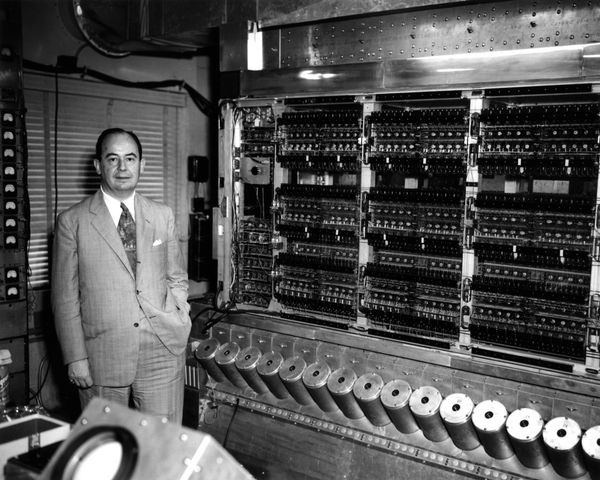

First Generation Computers
Second Generation Computers
Third Generation Computers
FIVE GENERATIONS OF COMPUTERS
First GENERATION COMPUTERS
The first generation of computers (1946-1959) used vacuum tubes as the primary electronic component.
These computers were massive, room-sized machines that consumed a lot of power and generated significant heat.
The first generation computers used machine language programming, which was difficult to learn and use.
Examples of first-generation computers include ENIAC (Electronic Numerical Integrator and Computer) and UNIVAC I (Universal Automatic Computer).
First-generation computers were primarily used for scientific and military applications, such as calculations and data processing.
SECOND GENERATION COMPUTERS
The second generation of computers (1959-1965) used transistors instead of vacuum tubes, making them smaller, faster, and more reliable.
Transistors also reduced power consumption and heat generation, making computers more practical for everyday use.
Second-generation computers introduced assembly languages and compilers, making programming easier and more efficient.
Magnetic tapes and disks were used for storage, and printers were used for output.
Examples of second-generation computers include the IBM 1401 and the DEC PDP-1 (Programmed Data Processor-1).
THIRD GENERATION COMPUTERS
The third generation of computers (1965-1980) used integrated circuits (ICs) and microprocessors, further miniaturizing computer hardware.
Third-generation computers introduced operating systems, such as UNIX and Windows, which managed computer resources and provided a platform for applications.
ICs contained multiple transistors and other components on a single chip of silicon, increasing processing power and reducing cost.
Memory storage expanded to include floppy disks and hard disks, and input/output devices like keyboards and monitors became standard.
Examples of third-generation computers include the IBM System/360 and the Apple II, which popularized personal computing.
Four Generation Computers
Fifth Generation Computers
Fifth Generation Computers
Fourth GENERATION COMPUTERS
The fourth generation of computers (1980-2000) saw the widespread use of microprocessors and the development of personal computers.
This generation introduced the use of Very Large Scale Integration (VLSI) technology, which allowed for the creation of complex chips with millions of transistors.
Fourth-generation computers used graphical user interfaces (GUIs) like Windows and MacOS, making computing accessible to a wider audience.
The internet and networking became mainstream, enabling global communication and information sharing.
Examples of fourth-generation computers include the IBM PC and Apple Macintosh, which revolutionized the way people worked and lived.
FIFTH GENERATION COMPUTERS
The fifth generation of computers (2000-present) is characterized by the use of artificial intelligence (AI), machine learning, and natural language processing.
This generation has seen the development of expert systems, which mimic human decision-making abilities.
Fifth-generation computers use parallel processing and neural networks to solve complex problems.
The internet of things (IoT) and cloud computing have become integral parts of fifth-generation computing.
Examples of fifth-generation computers include intelligent personal assistants like Siri and Alexa, and self-driving cars that use AI to navigate..
 Second Generation Computers
Second Generation Computers
 Third Generation Computers
Second Generation Computers
Third Generation Computers
Third Generation Computers
Second Generation Computers
Third Generation Computers